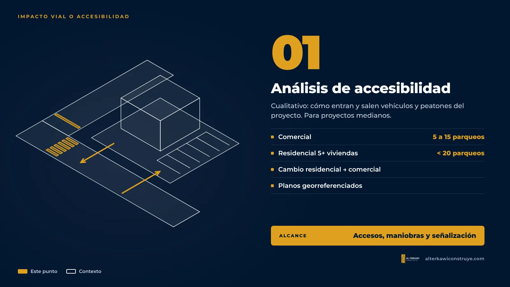
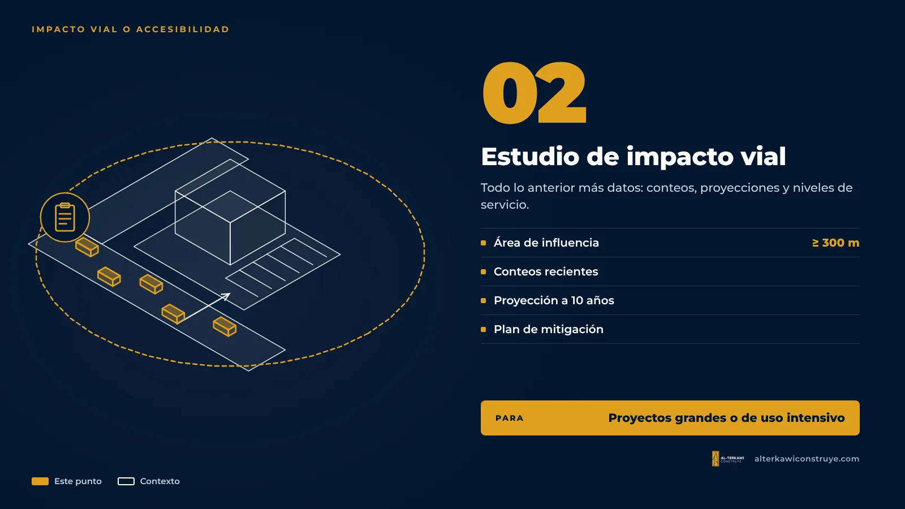

Impacto vial o análisis de accesibilidad: ¿cuál necesita su proyecto en Guayaquil?

La ordenanza de movilidad de Guayaquil de 2024 creó dos niveles de análisis para los proyectos que generan tráfico. Elegir el correcto evita presentar un estudio que no corresponde o, peor, que el Municipio devuelva el expediente pidiendo el otro.
La diferencia en una frase
- Estudio de impacto vial: mide con datos (conteos de tráfico, proyecciones, niveles de servicio) cómo afecta el proyecto a la red vial y propone mitigación. Es para proyectos grandes o de uso intensivo.
- Análisis de accesibilidad vehicular y peatonal: es cualitativo y se concentra en cómo entran y salen vehículos y peatones del proyecto. Es para proyectos medianos.
Qué proyectos piden cada uno
| Proyecto | Lo que pide la ordenanza |
|---|---|
| Comercial nuevo con 15 o más parqueos | Estudio de impacto vial |
| Residencial o mixto nuevo con 20 o más parqueos | Estudio de impacto vial |
| Bodegas, gasolineras, industria pesada, patios de contenedores, transporte | Estudio de impacto vial (siempre) |
| Comercial con 5 a 15 parqueos | Análisis de accesibilidad |
| Residencial con 5 o más viviendas y menos de 20 parqueos | Análisis de accesibilidad |
| Edificio existente que pasa de residencial a comercial | Análisis de accesibilidad |
Un caso frecuente en empresas: una casa en una avenida que se convierte en oficina o sucursal. Aunque la obra sea solo una remodelación, el cambio de residencial a comercial activa el análisis de accesibilidad.
Qué se presenta en el análisis de accesibilidad

- Memoria técnica con tipo de proyecto, código catastral y ubicación (fotos, imagen satelital y coordenadas UTM WGS84).
- Detalle de accesos, cálculo de parqueos, maniobras de vehículos y señalización.
- Planos en AutoCAD georreferenciados, plano de señalización y distribución de parqueos.
- Factibilidad de uso de suelo o consulta de uso de suelo.
Qué se presenta en el estudio de impacto vial

Todo lo anterior y, además, un área de influencia de al menos 300 metros, conteos de tráfico recientes, proyección de viajes a 10 años, análisis de niveles de servicio y un plan de mitigación. Lo explicamos en Cómo se hace un estudio de impacto vial.
Lo que recomendamos
Definir el número de parqueaderos con el análisis en mente. A veces un ajuste pequeño del programa cambia el nivel de estudio requerido; otras veces el negocio necesita esos parqueos y conviene asumir el estudio completo desde el inicio. Esa decisión se toma mejor en la etapa de factibilidad que con el expediente observado.
Siga leyendo
- Qué es el estudio de impacto vial y cuándo es obligatorio
- Registro de Construcción para locales y oficinas
¿Te ayudamos con tu proyecto?
En AL-TERKAWI CONSTRUYE te acompañamos desde el plano hasta la entrega de la obra.

¿Su local está en el límite?
Escríbanos y revisamos su caso antes de ingresar el permiso.

Arquitecto en Guayaquil, Samborondón y Daule. Permisos municipales y obra para viviendas y empresas.